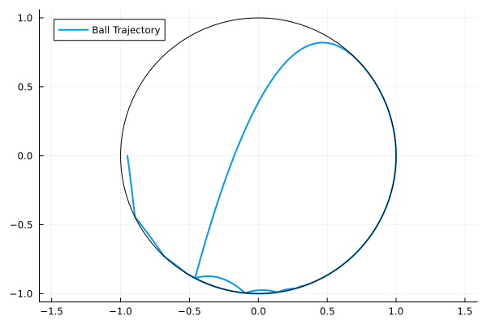

A Mechancal Example
A Mechanical system contains the data $(M, V, G, N, R, E)$
- .$M(q)$ is the mass matrix.
- .$V(q)$ is the potential energy.
- .$G(q)$ is the event location function.
- .$R(q) = dG(q)$ is the normal direction.
- .$E$ is the coefficient of restitution.
\[ H(x,y,p_x,p_y) = \frac{1}{2}(p_x^2+p_y^2) + y\]
\[ h(x,y) = 1 - (x^2+y^2) \geq 0.\]
import HybridDynamics as HD
import Plots as plt
using LaTeXStrings
M(q) = [1.0 0.0; 0.0 1.0]
V(q) = q[2]
h(q) = 1 - (q[1]^2+q[2]^2)
∇h(q) = [-2*q[1], -2*q[2]]
r = 0.60.6sysM = HD.MechanicalSystem(M, V; guard=h, normal=∇h, e=r)
probM = HD.prob(sysM, [-0.95, 0.0, 0.2, -1.5], (0.0, 10.0))
solM = HD.solve(probM, HD.RK45())HybridDynamics.MechanicalSol{Vector{Float64}, Vector{Vector{Float64}}, Vector{Vector{Float64}}, prob{MechanicalSystem{typeof(Main.M), typeof(Main.V), typeof(Main.h), typeof(Main.∇h), HybridDynamics.var"#MechanicalSystem##2#MechanicalSystem##3", Float64}, Vector{Float64}, Tuple{Float64, Float64}}, Vector{Float64}, Vector{Int64}, Vector{Float64}}([0.0, 0.0012914234194296877, 0.002496703682739453, 0.003653081300784781, 0.00478107495532526, 0.005892373752192669, 0.006993774473918457, 0.008089278717679456, 0.009181260237891502, 0.01027113356362117 … 9.98914185911759, 9.990422327009494, 9.99170327819042, 9.99298471359447, 9.994266634152712, 9.995549040793174, 9.996831934440737, 9.998115316017108, 9.999399186440813, 10.0], [[-0.95, 0.0, 0.2, -1.5], [-0.9497417153161141, -0.001938802903592783, 0.2, -1.5012914234194297], [-0.9495006592634521, -0.00374973252622957, 0.2, -1.5024967036827395], [-0.949269383739843, -0.0054885232947506895, 0.2, -1.503653081300785], [-0.9490437850089349, -0.0071859067987728965, 0.2, -1.5047810749553254], [-0.9488215252495614, -0.008859403181935514, 0.2, -1.5058923737521928], [-0.9486012451052163, -0.010519207212777357, 0.2, -1.5069937744739186], [-0.948382144256464, -0.01217132541758304, 0.2, -1.5080892787176796], [-0.9481637479524216, -0.013819323464413143, 0.2, -1.5091812602378916], [-0.9479457732872757, -0.015465327687503642, 0.2, -1.5102711335636212] … [-0.5113455450160627, -0.8590985100444464, -0.23883316324573253, 0.14219883638957126], [-0.5116505777884335, -0.8589167495601591, -0.23821977010882306, 0.14194808127326905], [-0.5119549396563001, -0.8587352428473817, -0.23760613779356204, 0.14169641441232342], [-0.5122586299417782, -0.858553991184825, -0.23699226657572325, 0.14144383640456787], [-0.5125616479645493, -0.8583729958528874, -0.23637815672933926, 0.14119034785293746], [-0.5128639930418655, -0.8581922581336485, -0.23576380852669318, 0.14093594936549128], [-0.5131656644885282, -0.8580117793108795, -0.23514922223836462, 0.14068064155545743], [-0.513466661616886, -0.8578315606700403, -0.23453439813323573, 0.14042442504126182], [-0.5137669837368383, -0.857651603498275, -0.23391933647848723, 0.14016730044655287], [-0.5139073527132234, -0.8575674614307113, -0.23363150520102188, 0.14004679658654953]], [[0.2, -1.5012914234194297, 0.0, -1.0], [0.2, -1.5024967036827395, 0.0, -1.0], [0.2, -1.503653081300785, 0.0, -1.0], [0.2, -1.5047810749553254, 0.0, -1.0], [0.2, -1.5058923737521928, 0.0, -1.0], [0.2, -1.5069937744739186, 0.0, -1.0], [0.2, -1.5080892787176796, 0.0, -1.0], [0.2, -1.5091812602378916, 0.0, -1.0], [0.2, -1.5102711335636212, 0.0, -1.0], [0.2, -1.511359743926817, 0.0, -1.0] … [-0.23883316324573253, 0.14219883638957126, 0.479031439022116, -0.19519158905467815], [-0.23821977010882306, 0.14194808127326905, 0.47903799475430237, -0.19583056243451125], [-0.23760613779356204, 0.14169641441232342, 0.4790439784391378, -0.19646844811052588], [-0.23699226657572325, 0.14144383640456787, 0.4790493931998284, -0.19710524241801985], [-0.23637815672933926, 0.14119034785293746, 0.47905424216297826, -0.1977409416907624], [-0.23576380852669318, 0.14093594936549128, 0.47905852845856856, -0.19837554226100385], [-0.23514922223836462, 0.14068064155545743, 0.4790622552199353, -0.19900904045943202], [-0.23453439813323573, 0.14042442504126182, 0.479065425583748, -0.1996414326151673], [-0.23391933647848723, 0.14016730044655287, 0.47906804268998693, -0.20027271505577138], [-0.23363150520102188, 0.14004679658654953, 0.4790691485149621, -0.20056774558155255]], prob{MechanicalSystem{typeof(Main.M), typeof(Main.V), typeof(Main.h), typeof(Main.∇h), HybridDynamics.var"#MechanicalSystem##2#MechanicalSystem##3", Float64}, Vector{Float64}, Tuple{Float64, Float64}}(MechanicalSystem{typeof(Main.M), typeof(Main.V), typeof(Main.h), typeof(Main.∇h), HybridDynamics.var"#MechanicalSystem##2#MechanicalSystem##3", Float64}(Main.M, Main.V, Main.h, Main.∇h, HybridDynamics.var"#MechanicalSystem##2#MechanicalSystem##3"(), 0.6, -1), [-0.95, 0.0, 0.2, -1.5], (0.0, 10.0)), [1.15089558767528, 1.15089558767528, 4.856832043953565, 4.856832043953565, 9.065325482851275], Int64[], [0.7199031482138164, 0.7203396773897709, 0.7207344659746214, 0.7211061433213942, 0.7214646014226113, 0.7218153481137484, 0.7221615414670105, 0.7225050250539274, 1.15089558767528, 1.1513430765615897 … 9.987861873577648, 9.98914185911759, 9.990422327009494, 9.99170327819042, 9.99298471359447, 9.994266634152712, 9.995549040793174, 9.996831934440737, 9.998115316017108, 9.999399186440813])xm = getindex.(solM.x, 1)
ym = getindex.(solM.x, 2)
plt.plot(xm, ym, label="Ball Trajectory", lw=2)
θ = LinRange(0, 2π, 100)
plt.plot!(cos.(θ), sin.(θ), label="", lc=:black, aspect_ratio=1)